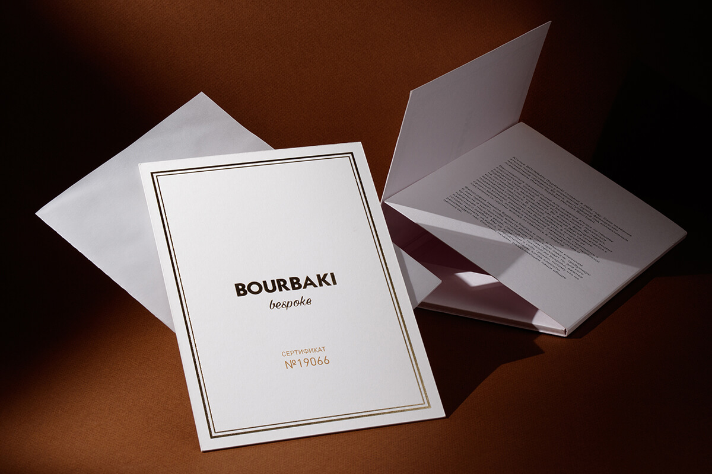

Подарочный сертификат для «BOURBAKI»
- Услуга
- Подарочные сертификаты
- Направление
- Полиграфия
- Отрасль
- Мода, одежда
Напечатаем такой же
Или другой: тираж, бумагу и отделку подберём под повод и бюджет.

Или другой: тираж, бумагу и отделку подберём под повод и бюджет.
 Сертификаты в конвертах
Сертификаты в конвертах
 Сертификаты с QR-кодом
Сертификаты с QR-кодом